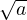
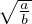

Avaldised ja arvuhulgad
Arvuhulgad
Naturaalarvude hulka tähistatakse sümboliga N ja see koosneb positiivsetest
arvudest N = {1;2;…}.
Täisarvude hulga moodustavad naturaalarvud koos oma vastandarvude ja
nulliga, täisarvude hulka tähistatakse sümboliga Z, Z = {…;-2;-1;0;1;2;...}.
Ratsionaalarvude hulga moodustavad arvud, mis avalduvad jagatisena  , kus
a ∈ Z, b ∈ Z ja b≠0. Ratsionaalarvude hulka tähistatakse sümboliga Q.
Irratsionaalarvude hulga moodustavad arvud, mida ei saa esitada jagatisena, nad
avalduvad lõpmatute mitteperioodiliste kümnendmurdudena.
, kus
a ∈ Z, b ∈ Z ja b≠0. Ratsionaalarvude hulka tähistatakse sümboliga Q.
Irratsionaalarvude hulga moodustavad arvud, mida ei saa esitada jagatisena, nad
avalduvad lõpmatute mitteperioodiliste kümnendmurdudena.
Reaalarvude hulga moodustavad ratsionaalarvud koos irratsionaalarvudega ja seda
hulka tähistatakse sümboliga R.
Omadused:
- arvu n vastandarv on -n, sest n + (-n) = 0
- lahutamine on vastandarvu liitmine ehk a - b = a + (-b)
- iga kahe täisarvu vahe on täisarv
- paaritud täisarvud on esitatavad kujul 2n + 1
- iga ratsionaalarv avaldub lõpmatu perioodilise kümnendmurruna
- iga lõpmatu perioodiline kümnendmurd esitab ratsionaalarvu
- a ja on teineteise pöördarvud
- ei leidu ratsionaalarvu, mille ruut on 2
- iga reaalarv avaldub kümnendmurruna
- ruutjuur mittenegatiivsest reaalarvust on alati reaalarv
Arvuhulkade omadused
Arvuhulk on järjestatud, kui iga kahe arvu a,b korral kehtib, kas a < b või a = b
või a > b.
Arvuhulk on kinnine mingi tehte suhtes, kui selle hulga iga kahe arvu korral on
tehte tulemus samuti samas hulgas. Tihedaks arvuhulgaks nimetatakse arvuhulka,
kus iga kahe erineva arvu vahel leidub veel sama hulga arve. Arvuhulk on pidev,
kui arvuhulga igale arvule vastab üks kindel arvtelje punkt ja igale arvtelje punktile
vastab üks selle arvuhulga arv.
- Naturaalarvude hulk on:
- järjestatud lõpmatud hulk, kus on vähim, kuid pole suurimat arvu
- kinnine liitmise ja korrutamise suhtes
- Täisarvude hulk on:
- järjestatud lõpmatu hulk, kus pole vähimat ja suurimat arvu
- kinnine liitmis-, korrutamis- ja lahutamistehte suhtes
- Ratsionaalarvude hulk on:
- järjestatud lõpmatu hulk, kus pole vähimat ja suurimat arvu
- tihe arvuhulk, iga kahe ratsionaalarvu vahel on veel ratsionaalarve
- kinnine liitmise, lahutamise, korrutamise ja nullist erineva arvuga
jagamise suhtes
- Reaalarvude hulk on:
- järjestatud lõpmatu hulk, kus pole vähimat ja suurimat arvu
- pidev arvuhulk
- kinnine liitmise, lahutamise, korrutamise ja nullist erineva arvuga
jagamise suhtes
Tehete omadused
Kommutatiivsus ehk vahetuvus tähendab seda, et avaldise liikmeid võib
vahetada
- a + b = b + a ja ab = ba - liitmine ja korrutamine on kommutatiivsed
- lahutamine ei ole kommutatiivne: a - b≠b - a
Assotsiatiivsus ehk ühenduvus tähistab seda, et sulgude asukohta võib muuta
- a + (b + c) = (a + b) + c ja a(bc) = (ab)c
Korrutamise distributiivsus liitmise suhtes tähistab seda, et sulgudes olevat avaldist
võib läbi korrutada
Arvu absoluutväärtus
Arvu absoluutväärtus on antud arvu arvteljel kujutava punkti kaugus
nullpunktist. Seega on positiivsete arvude ja nulli absoluutväärtus võrdne
endaga ja negatiivsete arvude absoluutväärtus võrdne vastava negatiivse arvu
vastandarvuga. Arvu a absoluutväärtus tähistatakse  ja
ja  =
=
Näiteks = 5, = 12 ja = 0.
Omadused:
- ≥ 0
- =

- a ≤
 , - a ≤
, - a ≤
 ≤
≤ +
+
- ≥
- =
 ⋅
⋅
- = , b≠0
Arvu standardkuju
Väga suuri ja väikseid arve esitatakse tavaliselt standardkujul: a⋅ 10k, kus k ∈ Z ja
1 ≤ a < 10.
Näiteks: 1245712 = 1.245712 ⋅ 106 ja 0.000045 = 4.5 ⋅ 10-5.
Arvusüsteemid
Arvude tähistamiseks kasutatakse peale kümnendsüsteemi veel teise arvusüsteeme.
Näiteks arvutid kasutavad kahendsüsteemi, milles on kaks numbrit: 0 ja
1.
Nii kümnendsüsteem, kui kahendsüsteem on positsioonilised arvusüsteemid, see
tähendab, et numbri väärtus arvus sõltub tema asukohast ehk positsioonist.
Positsioonilise arvusüsteemi aluseks on arv k, mis näitab mitu eelmise
numbrikoha ühikut võrdub järgmise numbrikoha ühikuga. Kümnendsüsteemis
k=10 ja seega näiteks 102 = 10 ⋅ 101,103 = 10 ⋅ 102 ja kahendsüsteemis k=2.
Positsioonilised arvusüsteemis saab arvu n0n1n2 esitada kujul a = n0 ⋅k0 +n1 ⋅k1 +n2 ⋅k2 +…,
kus n-d on vastavas arvusüsteemis olevad numbrid (näiteks kümnendsüsteemis:
0,1,2,3,4,5,6,7,8,9).
Kahendsüsteem
Kahendsüsteemis on arvu numbrikoha kordajateks kas 0 või 1. Kahendsüsteemis
saab suvalist arvu n0n1n2 esitada kujul a = n0 ⋅ 20 + n1 ⋅ 21 + n2 ⋅ 22 + …, kus n-de
väärtus on 0 või 1. Näiteks arvud 0,1,2,3,4 kahendsüsteemis esitatuna:
- 0 = 0 ⋅ 20
- 1 = 20
- 10 = 0 ⋅ 20 + 21
- 11 = 21 + 21
- 100 = 0 ⋅ 20 + 0 ⋅ 21 + 22
|
|
| kümnendsüsteem | kahendsüsteem |
|
|
|
|
| 0 | 0 |
|
|
| 1 | 1 |
|
|
| 2 | 10 |
|
|
| 3 | 11 |
|
|
| 4 | 100 |
|
|
| 5 | 101 |
|
|
| 6 | 110 |
|
|
| 7 | 111 |
|
|
| 8 | 1000 |
|
|
| 9 | 1001 |
|
|
| 10 | 1010 |
|
|
| 11 | 1011 |
|
|
| |
Arvu n-s juur
Reaalarvu a n-s juur on selline arv b, et bn = a ja kui n on paarisarv, siis
peab a > 0. Teisiti öeldes tähistab reaalarvust a n-nda juure võtmine arvu a
astendamist ratsionaalarvuga , = a ja kuna (am) = a,siis kehtib
= a,siis kehtib
 = a
= a .
.
Teoreem: Juure väärtus ei muutu, kui juurijat ja juuritava astendajat jagada nende
ühisteguriga või korrutada ühe ja sama nullist erineva naturaalarvuga, kui juuritav
on positiivne. Seega = .
Ruutjuure omadused:
- = b, kus b ≥ 0 ja b2
= a
 = = a
= = a
- =  ⋅, kus a ≥ 0, b ≥ 0
- = ∣a∣ =
-  =
n-da ruudu omadused:
- a
 = , kus a on positiivne reaalarv, m ∈ Z,n ∈ N, n >1
= , kus a on positiivne reaalarv, m ∈ Z,n ∈ N, n >1
- = ∣a∣ =
- = a, kui k on positiivne täisarv
- = ⋅
 = ,(b≠0)
= ,(b≠0)
- = , kui a>0
- ()m = , kui m ∈ Z, siis a≠0
- =
Arvu aste
Tehted arvu astmetega:
- an = a ⋅ a ⋅ a ⋅… ⋅ a (n tegurit)
- a1 = a, a0 = 1
- (a ⋅ b)n = an ⋅ bn
 = am-n, a≠0
= am-n, a≠0
- (
 )n = , (b≠0)
)n = , (b≠0)
- an ⋅ am = an+m
- a-n =
- a
 = , kus a on positiivne reaalarv, m ∈ Z,n ∈ N, n >1
= , kus a on positiivne reaalarv, m ∈ Z,n ∈ N, n >1